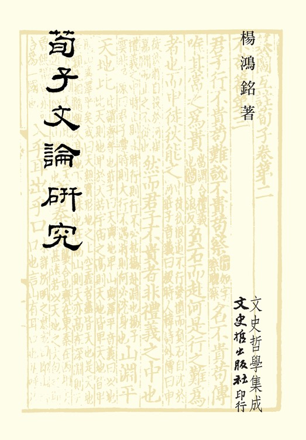
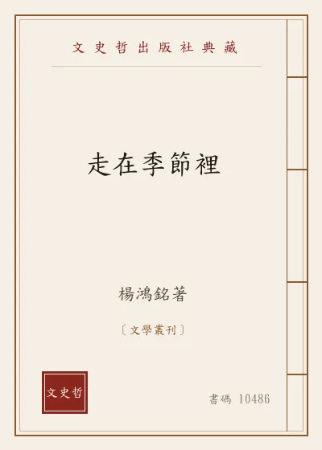
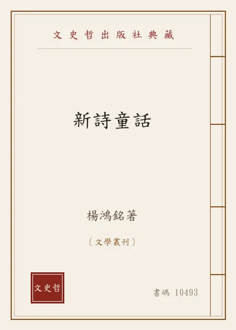

荀子文論研究
NT$ 200
新詩創作與批評
NT$ 420
古詩十九首析評
NT$ 280
詩的行板
NT$ 380
思想的與文學的
NT$ 280
茶花的詩與文
NT$ 300
詩的自然組曲
NT$ 320
詩的聲音
NT$ 350
詩的樂章
NT$ 380
詩的光影
NT$ 350

走在季節裡
NT$ 280

新詩童話
NT$ 260
名畫新詩
NT$ 300
印象新詩
NT$ 360

高中國文課文析評 第一冊
NT$ 340

高中國文課文析評 第二冊
NT$ 420

國中國文課文析評 第一冊
NT$ 300

國中國文課文析評 第二冊
NT$ 300
中國文學之理論（上冊）
NT$ 200

中國文學理論專論研究（一）
NT$ 0
詩學理論與評賞－趣味之部
NT$ 160
歷代古文析評－兩漢魏晉之部
NT$ 0
歷代古文析評－兩漢魏晉之部
NT$ 0
歷代古文析評－唐宋之部
NT$ 0
歷代古文析評－唐宋之部
NT$ 0
孝經之文學
NT$ 160

強者的塑造
NT$ 120